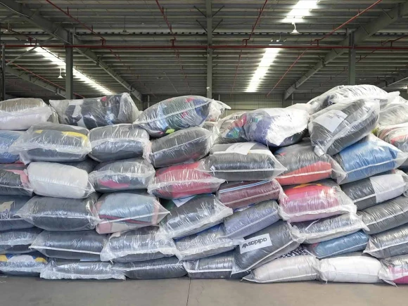

Recovered garments and mixed rags from reputed suppliers across the globe — the raw material that powers the textile recycling industry and keeps clothing out of landfill.
Used clothing is one of the most valuable recovered material streams in the world. Sorted, graded and baled at origin, it becomes the feedstock for shoddy yarns, blankets, wipers and regenerated fabrics. As indentors, we connect Indian recyclers and mills with the reputed global suppliers who recover and grade it.

Recovered clothing re-enters production instead of ending up as waste.
Reusing fibre reduces the demand for virgin cotton, wool and synthetics.
We represent reputed suppliers worldwide so buyers get reliable, repeatable quality.
Tell us the grades and volumes you're after, and we'll connect you with the right global supplier.
Make an Enquiry